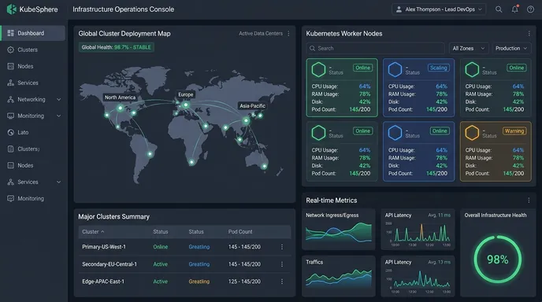
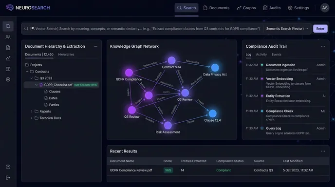

01. AI & Machine Learning
AI & Machine Learning
We develop AI systems that understand information, recognise patterns, automate complex tasks, and support better decisions.
< 140msinference latency
Learn more about AI and machine learningTechnology should solve real problems. We help organisations improve the way they work through intelligent software, practical AI solutions, and reliable digital infrastructure. Every system is carefully designed, tested, and evaluated before delivery. Our clients retain complete ownership of the work we build for them.
Trusted Partners & Collaborations
What We Do
We combine artificial intelligence, custom software, and robust infrastructure to build dependable systems that solve operational challenges.
01. AI & Machine Learning
We develop AI systems that understand information, recognise patterns, automate complex tasks, and support better decisions.
< 140msinference latency
Learn more about AI and machine learning02. Web & Mobile
We build modern websites, mobile applications, and business platforms that are fast, reliable, and easy to use.
Up to 99.99%system availability
Learn more about Web and mobile development03. Cloud & Infrastructure
We help businesses run their software reliably, manage growing workloads, and reduce unnecessary infrastructure costs.
Up to 45%cloud cost savings
Learn more about Cloud and infrastructure04. Enterprise & SAP
We connect business systems and automate processes so that information moves accurately between departments.
No planneddowntime during integrations
Learn more about Enterprise and SAP integration05. Data & Analytics
We turn large amounts of information into organised data, useful reports, and insights that support business decisions.
50,000+events processed per second
Learn more about Data and analytics06. Private & Secure
We build systems that can operate entirely within your organisation's infrastructure without sending sensitive information to external services.
Zeroexternal data transfer
Learn more about Private and secure technologySelected Projects
Making financial audits faster and more reliable. We developed an intelligent system that checks financial records, identifies unusual transactions, and helps finance teams find discrepancies without manually reviewing every entry.

Weeks to daysaudit cycles reduced from weeks to days
99.98%detection accuracy, subject to validation
Privateinfrastructure for sensitive financial data
Making software releases faster and more reliable. We helped improve the infrastructure behind software delivery, making it easier to manage traffic, test updates, and prevent deployment failures.
4xfaster software releases
0failed deploys over 14 months
< 12msp99 edge latency

Finding reliable information across millions of documents. We developed a document search system that helps researchers find relevant information quickly and check the sources behind the answers.
10M+documents indexed
< 850msquery response time
100%source references verified

How We Work
Four practical stages, each with tangible deliverables you review and sign off.
First, we learn about your organisation, your challenges, and what you want to achieve.
We create a clear technical plan before development begins.
Our engineers develop your solution in manageable stages, testing it throughout the process.
We hand over a complete working system with the documentation and tools needed to manage it.
Engagement Models
Choose by product stage, timeline and the team you already have. No red tape, and only senior engineers.
Most chosen
A team of experienced engineers works on your project over an agreed period.
3, 6 or 12 monthsMonthly engagement
Typical team
You get
Fixed budget
A complete project delivered against an agreed scope, budget, and timeline.
6 to 16 weeksFixed price by milestone
Typical team
You get
Ready in 48 hours
Add experienced engineers to your existing team when you need specific skills or additional development capacity.
1 month or moreFlexible terms
Typical squad
You get
Project Estimator
Tell us what you want to build, where it will run, and when you need it. Our estimator will suggest the type of engineering team required, a suitable technology stack, a possible delivery schedule, and an initial project direction.
Founder Spotlight
Hon. Dr. Muavia Tanveer Khan
Founder & Lead Architect
“Artificial intelligence should work as dependable infrastructure, not as isolated tools.”
Muavia leads NeuroSyn's work in artificial intelligence, software architecture, and advanced engineering research.
A documentary featuring Muavia's journey, recognition, and work in technology and innovation.
Start a Conversation
Tell us what your organisation needs. We'll help you understand the possibilities and identify a practical way forward.